Holistic Fusion: Task- and Setup-Agnostic Robot Localization and State Estimation with Factor Graphs
한줄 요약 — Holistic Fusion은 임의의 sensor/reference frame을 factor graph 변수로 승격하고 drift를 random walk와 지역 keyframe으로 추적해, GNSS 복귀나 LiDAR 퇴화가 있어도 전역 정확도와 제어용 smooth odometry를 한 최적화에서 유지하는 공개 범용 상태추정 프레임워크다.
1.연구 배경 및 동기
센서 수보다 어려운 문제, 서로 다른 좌표계와 시간의 일관된 결합
산림·광산·건설 현장의 로봇은 GNSS, LiDAR odometry, IMU, landmark처럼 성질이 다른 센서를 쓴다. 전역 센서는 drift를 누르지만 끊기거나 jump하고, 지역 odometry는 매끄럽지만 누적 오차가 생긴다. 제어에는 연속적인 지역 상태가, 임무 기록에는 전역 정합이 동시에 필요하다.
기존 estimator는 특정 센서 조합과 고정 frame에 맞춰져 센서를 추가하거나 reference frame을 바꾸기 어렵다. 지연된 absolute 측정이 들어오면 과거 상태를 고쳐야 하며, 그 보정이 곧바로 제어 frame에 나타나면 명령이 튀는 문제가 있다.
Holistic Fusion은 모든 측정을 factor graph의 변수·factor로 표현하고 World와 jump-free Odom frame을 함께 유지한다. 고정지연 최적화와 graph marginalization으로 계산을 제한하며, 임의 frame의 state와 covariance를 질의하는 공통 인터페이스를 제공한다.
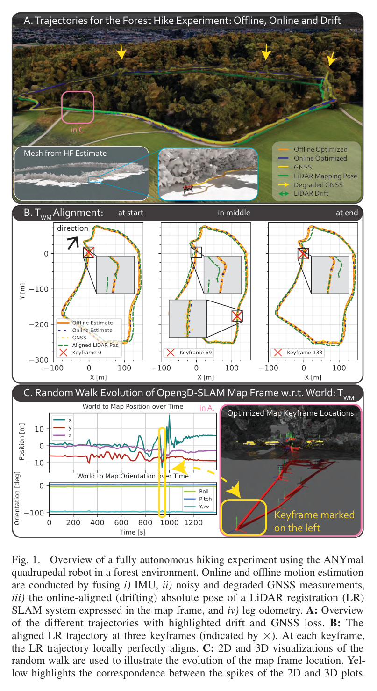
원문 Figure 1 · PDF p.1 — Fig. 1. Overview of a fully autonomous hiking experiment using the ANYmal quadrupedal robot in a forest environment. Online and offline motion estimation are conducted by fusing i) IMU, ii) noisy and degraded GNSS measurements, iii) the online-aligned (drifting) absolute pose of a LiDAR registration (LR) SLAM system expressed in the map frame, and iv) leg odometry. A: Overview of the different trajectories with highlighted drift and GNSS loss. B: The aligned LR trajectory at three keyframes (indicated by ×). At each keyframe, the LR trajectory locally perfectly aligns. C: 2D and 3D visualizations of the random walk are used to illustrate the evolution of the map frame location. Yel- low highlights the correspondence between the spikes of the 2D and 3D plots.
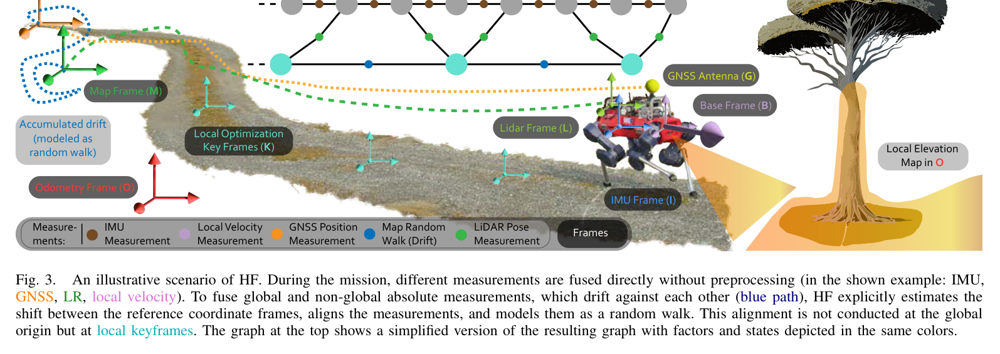
원문 Figure 3 · PDF p.5 — Fig. 3. An illustrative scenario of HF. During the mission, different measurements are fused directly without preprocessing (in the shown example: IMU, GNSS, LR, local velocity). To fuse global and non-global absolute measurements, which drift against each other (blue path), HF explicitly estimates the shift between the reference coordinate frames, aligns the measurements, and models them as a random walk. This alignment is not conducted at the global origin but at local keyframes. The graph at the top shows a simplified version of the resulting graph with factors and states depicted in the same colors.
선행 연구의 한계
전용 LiDAR-visual-inertial 또는 GNSS fusion은 높은 정확도를 내지만 센서 구성과 작업 환경이 달라지면 graph와 코드 변경이 필요하다.
단일 rigid Umeyama alignment는 장거리 SLAM drift 때문에 서로 다른 시점의 map/world 궤적을 동시에 맞출 수 없다.
SLAM pose를 binary between factor로 바꾸면 local consistency는 얻지만 원래 map frame과 world frame의 관계를 최적화·동기화하지 못한다.
전역 보정을 그대로 제어에 쓰면 GNSS 복귀 시 위치 jump와 높은 jerk가 local elevation map이나 feedback control을 오염시킨다.
고정-lag smoother에서는 측정이 사라질 때 reference/global variable이 marginalize되어 재등장 시 정보가 끊기는 구현 문제가 있다.
이 연구의 기여
robot navigation state와 임의 개수의 reference-frame alignment·landmark·extrinsic 상태를 하나의 MAP factor graph에서 공동 추정한다.
reference frame drift를 SE(3) discrete-time random walk로 모델링하고 장거리 수치 안정성을 위해 지역 keyframe 기반 정렬을 도입한다.
전역 W 상태와 별도로 body-frame velocity와 increment를 적분하는 jump-free O odometry를 IMU rate로 제공한다.
ANYmal, RACER, HEAP의 다섯 실제 임무에서 absolute·local·landmark 측정, delay와 dropout, geometric degeneracy를 포괄적으로 검증한다.
GTSAM/Eigen 기반 C++ core, ROS·ROS2 interface와 여러 플랫폼 예제를 공개해 setup-agnostic 사용성을 제공한다.
2.방법론 및 시스템 구성
상태 graph에는 body pose·velocity·IMU bias와 센서별 동적 변수를 넣는다. absolute, landmark, local odometry, IMU 측정을 각기 residual factor로 연결해 MAP 추정을 수행한다.
World graph의 보정과 별도로 최신 body velocity를 적분한 Odom frame을 유지해 제어 출력의 jump를 없앤다. 비동기 측정은 timestamp 위치에 삽입하고 fixed-lag window 밖 상태는 marginalize한다.
처리 파이프라인
1
센서·기준 좌표계 선언
센서 timestamp와 frame tree를 기준으로 측정을 absolute, landmark, local 또는 IMU factor로 변환한다.
2
동적 변수 생성
Body pose·velocity·bias와 GNSS offset 등 필요한 동적 변수를 생성하고 random-walk prior로 시간축을 연결한다.
3
Holistic measurement function
측정 함수와 covariance를 factor로 추가해 fixed-lag MAP를 갱신하며 늦게 도착한 값도 과거 timestamp에 삽입한다.
4
Drift random walk
window 밖 상태를 marginalize해 정보 prior로 압축하고 graph 크기와 온라인 계산량을 제한한다.
5
Local keyframe alignment
전역 최적화의 pose correction은 World에 반영하되 최신 body velocity를 적분해 연속 Odom 상태를 출력한다.
6
비동기 fixed-lag update
사용자는 임의 source-target frame의 pose·velocity와 covariance를 같은 API로 요청해 planner와 controller에 공급한다.
7
전역·로컬 이중 출력
센서가 끊기면 남은 factor로 추정하고 복귀 측정은 graph를 재정렬하되 Odom 제어 출력은 불연속 없이 유지한다.
회전·이동 각 축의 drift 허용량을 noise로 지정한다. 0은 고정 관계, 큰 값은 빠르게 변하는 map frame을 의미한다.
Absolute pose holistic factor
h(x)=T_{RW}T_{WI}T_{IS}T_{SS_{corr}}\in SE(3)
world robot state, reference alignment, sensor extrinsic를 연결해 해당 센서·기준 좌표계에서 기대되는 절대 pose를 직접 만든다.
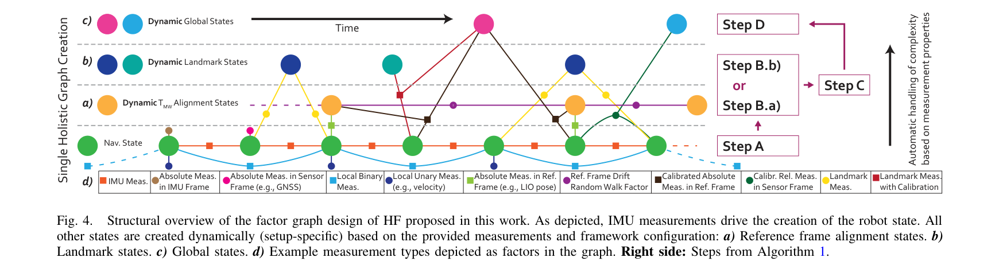
원문 Figure 4 · PDF p.7 — Fig. 4. Structural overview of the factor graph design of HF proposed in this work. As depicted, IMU measurements drive the creation of the robot state. All other states are created dynamically (setup-specific) based on the provided measurements and framework configuration: a) Reference frame alignment states. b) Landmark states. c) Global states. d) Example measurement types depicted as factors in the graph. Right side: Steps from Algorithm 1.
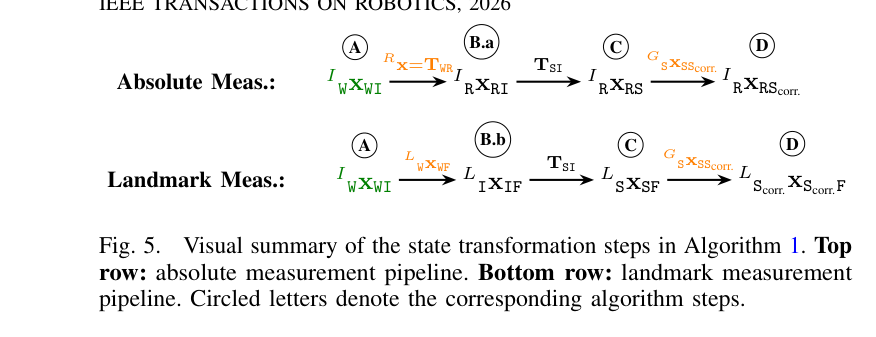
원문 Figure 5 · PDF p.9 — Fig. 5. Visual summary of the state transformation steps in Algorithm 1. Top row: absolute measurement pipeline. Bottom row: landmark measurement pipeline. Circled letters denote the corresponding algorithm steps.
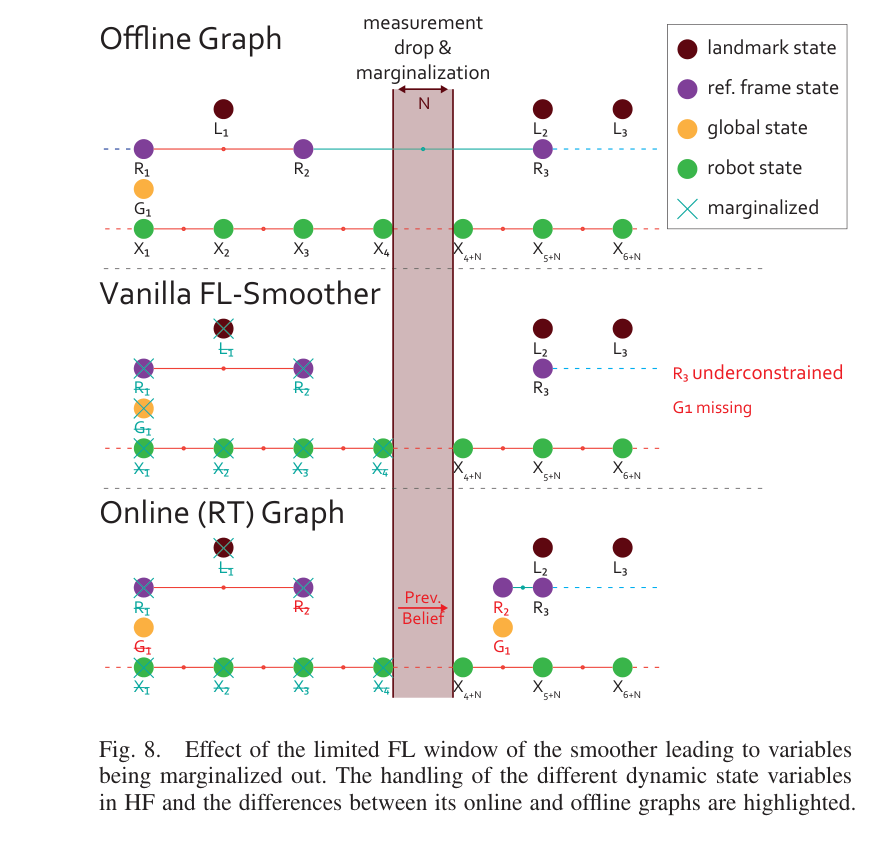
원문 Figure 8 · PDF p.12 — Fig. 8. Effect of the limited FL window of the smoother leading to variables being marginalized out. The handling of the different dynamic state variables in HF and the differences between its online and offline graphs are highlighted.
3.핵심 기술
좌표계를 상태로 다루는 계층형 factor graph
Frame-agnostic factor 설계로 World, map, odometry, body, sensor frame을 같은 graph에서 조합한다. 새 센서는 측정 함수·noise·frame 연결만 정의하면 되고 출력도 임의 frame으로 변환된다.
absolute, landmark, local/relative, raw IMU 측정 지원
임의 수의 reference/sensor frame을 이론상 수용
Huber·Cauchy·Tukey robust norm으로 outlier 처리 가능
Random walk와 지역 keyframe을 결합한 drift 정렬
World는 GNSS·landmark 보정을 수용하고 Odom은 최신 body velocity를 적분해 jump-free 상태를 낸다. 전역 일관성과 제어 연속성을 한 estimator에서 분리해 제공하는 핵심 장치다.
Loop closure jump는 외부 correction measurement로 흡수
drift noise는 가능한 작되 실제 drift를 수용하도록 설정
keyframe 변화 mean은 측정 자체의 알려진 위치 이동을 사용
전역 정확도와 로컬 smoothness의 분리
Fixed-lag smoothing은 비동기·지연 측정을 과거 상태에 넣고 오래된 변수를 marginalize한다. 정확한 smoothing을 유지하면서 장기 임무의 graph 크기를 제한한다.
GNSS offset, landmark, bias 같은 변수를 운전 중 생성·제거할 수 있어 센서 가용성과 임무 단계가 바뀌는 현장 로봇에 대응한다.
iSAM2 fixed-lag smoother와 완전 marginalization
online belief를 offline 초기값으로 재사용
C++ core는 ROS middleware와 분리
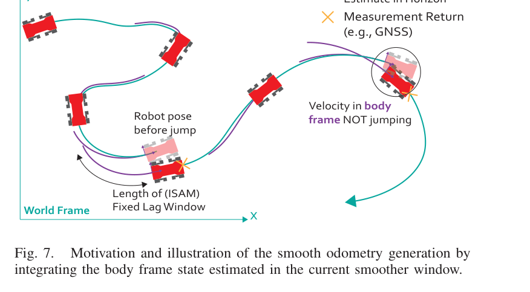
원문 Figure 7 · PDF p.11 — Fig. 7. Motivation and illustration of the smooth odometry generation by integrating the body frame state estimated in the current smoother window.
4.실험 결과
실험 환경·장비·데이터
산림 hiking과 산악 구간에서 GNSS·IMU·LiDAR odometry를 융합하고 motion-capture 또는 기준 trajectory와 비교한다.
HEAP 굴착기 임무에는 dual GNSS, Ouster OS0-128 LiDAR, rotary encoder와 CompSLAM·CoinLIO local odometry를 사용한다.
GNSS 차단과 기하 퇴화 구간을 포함해 센서 dropout 뒤 전역 복구와 지역 출력 연속성을 평가한다.
실험 프로토콜
World·filtered World·jump-free Odom 출력을 TSIF 등과 비교하고 ATE, ARE, RTE, RRE, jump 수와 jitter를 계산한다.
상태 생성률을 40~100 Hz로 바꿔 정확도와 최적화 latency의 trade-off를 측정한다.
최대 167,020 변수의 hiking과 161,217 변수 HEAP graph에서 전체 mission 처리 시간과 장기 안정성을 기록한다.
비교 기준
ANYmal 기본 TSIF local estimator
Open3D-SLAM LiDAR registration 단독
MINS global multisensor inertial navigation
LiDAR pose를 standard between factor로 넣은 HF ablation
rigid Umeyama alignment와 random-walk를 끈 alignment
평가 지표
ATE [m], ARE [deg]
RTE [%], RRE [deg/m]
NOJ와 jitter [m/s³]
update latency [µs], async optimization time [ms], memory/CPU
원문 Figure 10 · PDF p.13 — Fig. 10. Overview of the evaluated robotic platforms. Due to its advanced capabilities and sensor measurement setup, three ANYmal datasets (Sec. VI-C.1/2/3) are investigated. Moreover, the RACER vehicle (Sec. VI-D) is a case study for high-speed off-road driving and demanding tracking control. HEAP (Sec. VI-E) operates in mixed environments and requires high accuracy for global position and orientation in the presence of geometric degeneracy. SMB, a robot used for education, and Boxi [79], an integrated sensor box for GT generation, are not in this work but are available in the open-source examples.
핵심 결과 해석
Hiking에서 HF World의 forest ATE/ARE는 0.42 m/1.42°, mountain은 0.38 m/2.63°였다. Filtered World mountain 결과는 0.12 m/1.22°까지 개선됐다. World 보정은 정확하지만 jump 수 2,482와 jitter 59,382가 나타났고, Odom은 jump 0과 jitter 3,470으로 제어 연속성을 지켰다.
40 Hz state 생성에서 평균 상태 생성 25.31 μs, 최적화 3.86 ms, ATE 0.373 m였다. 100 Hz는 최적화가 8.96 ms로 늘었지만 정확도 이득은 없어 센서율보다 과도한 state 증가는 비효율적이었다.
23.6분 hiking graph 167,020 변수는 56.7초, 17.9분 HEAP graph 161,217 변수는 62.4초에 처리됐다. GNSS 차단·LiDAR 퇴화 뒤 absolute 정보가 돌아오면 World를 복구하면서 Odom 기반 제어 trajectory는 계속 매끄럽게 유지했다.
정량 결과
평가 항목
정량 결과
조건·맥락
원문 근거
Forest HF-World ATE/ARE
0.42 m / 1.42°
GNSS+IMU+absolute LR+leg odometry
PDF p.14
Mountain HF-World ATE/ARE
0.38 m / 2.63°
Seealpsee autonomous hike
PDF p.14
Mountain GNSS-filtered HF ATE/ARE
0.12 m / 1.22°
GNSS covariance 1 m threshold
PDF p.14
HF-Odom local smoothness
NOJ 0, jitter 3,470 m/s³
두 ANYmal hike 평균
PDF p.14
40 Hz online computation
25.31 µs latency, 3.86 ms optimization
Forest mission
PDF p.15
HEAP offline optimization
161,217 variables / 62.4 s
17.9 min mission
PDF p.13
실패 사례와 경계조건
Single GNSS antenna는 초기 yaw가 관측되지 않아 충분한 이동 전에는 잘못된 local minimum에서 회복하기 어렵다.
Random walk를 끄면 누적 LiDAR drift 때문에 GNSS와 map trajectory 중간의 타협 추정이 생기고, local origin을 쓰지 않으면 장거리에서 alignment가 진동한다.
Mountain dataset에서 MINS는 LiDAR와 GNSS dropout이 겹친 중간 구간에 divergence하여 split 평가가 필요했다.
새 setup의 drift noise·alignment initial uncertainty tuning이 부적절하면 graph가 ill-posed하거나 실제 drift를 따라가지 못할 수 있다.
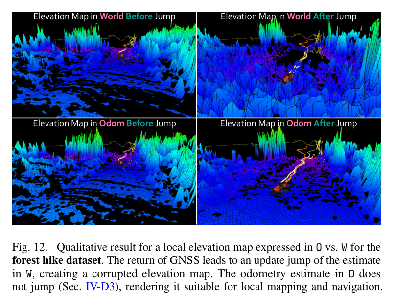
원문 Figure 12 · PDF p.14 — Fig. 12. Qualitative result for a local elevation map expressed in O vs. W for the forest hike dataset. The return of GNSS leads to an update jump of the estimate in W, creating a corrupted elevation map. The odometry estimate in O does not jump (Sec. IV-D3), rendering it suitable for local mapping and navigation.
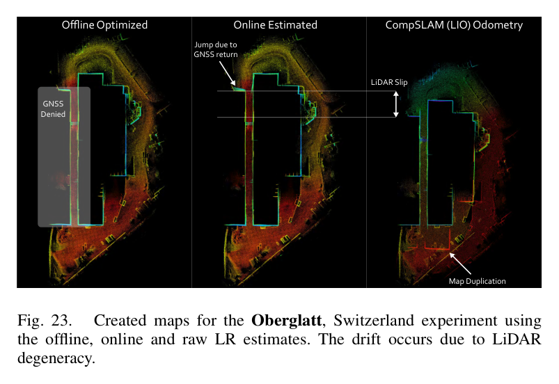
원문 Figure 23 · PDF p.18 — Fig. 23. Created maps for the Oberglatt, Switzerland experiment using the offline, online and raw LR estimates. The drift occurs due to LiDAR degeneracy.
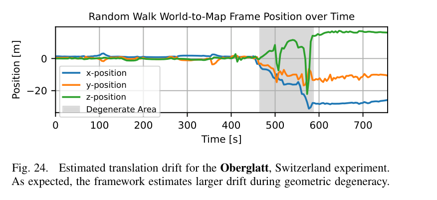
원문 Figure 24 · PDF p.18 — Fig. 24. Estimated translation drift for the Oberglatt, Switzerland experiment. As expected, the framework estimates larger drift during geometric degeneracy.
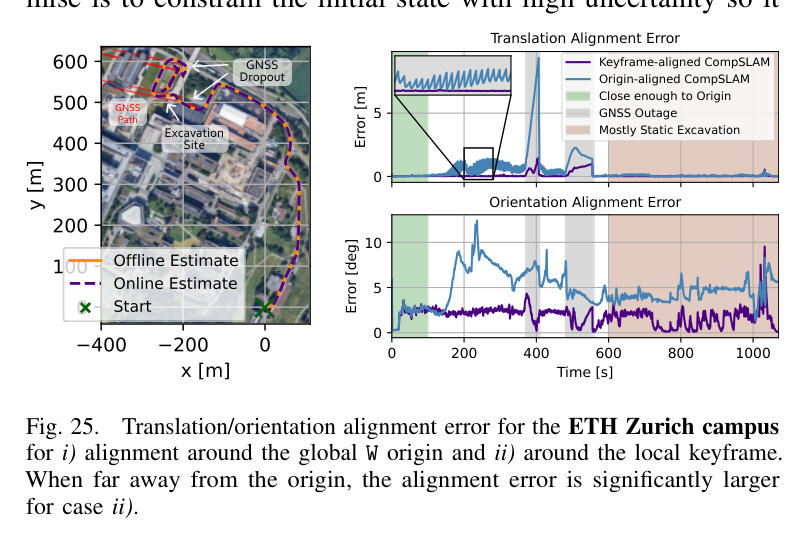
원문 Figure 25 · PDF p.18 — Fig. 25. Translation/orientation alignment error for the ETH Zurich campus for i) alignment around the global W origin and ii) around the local keyframe. When far away from the origin, the alignment error is significantly larger for case ii).
5.한계 및 향후 연구
현재 한계
초기값이 실제 상태에서 멀면 비선형 optimizer가 잘못된 local minimum에 수렴할 수 있어 고불확실도 prior와 초기 정렬이 필요하다.
Single-antenna GNSS에서는 초기 yaw observability가 이동에 의존하며 정지 상태에서 즉시 전역 heading을 얻지 못한다.
높은 state creation rate는 정확도 이득이 작아도 optimization time과 offline memory를 증가시킨다.
범용성이 커진 만큼 drift level, alignment uncertainty, factor noise 등 새 사용자 tuning 파라미터가 많다.
실험의 extrinsic은 horizon 동안 상수로 두며 온도·진동에 따른 sub-mm/sub-degree 변화와 시간 동기화 자체는 주제가 아니다.
향후 연구
Global state의 변화도 random process로 모델링해 장시간 calibration 변화와 context variable drift를 다룬다.
Gaussian process나 spline 기반 continuous-time backend를 도입해 arbitrary timestamp와 dense state 비용을 줄인다.
로봇 동역학과 다음 measurement 도착을 예측해 state creation rate를 adaptive하게 조절한다.
Ill-posed 초기화와 outlier filtering에 학습된 probabilistic prior 또는 ML quality estimator를 결합한다.
Factor residual 기반 sensor integrity monitoring으로 GNSS multipath·LiDAR degeneracy에 따라 noise와 안전속도를 자동 조정한다.
6.한마디로 정리
핵심 방법은?
센서와 기준 좌표계를 graph state로 만들고 SE(3) random walk·local keyframe으로 drift를 추정하며, W와 O 출력을 분리한다.
핵심 결과는?
세 플랫폼·다섯 임무에서 absolute sensor fusion의 전역 정확도와 NOJ 0의 smooth odometry, IMU-rate 출력을 동시에 입증했다.
한계는?
초기 observability와 noise tuning, state rate 계산비용에 민감하며 시간변 calibration·continuous-time 처리와 자동 integrity 판단은 남아 있다.
#측위·매핑#시스템통합·현장실증#GTSAM factor graph#다중 기준좌표계 자동 정렬#동적 외부보정#local keyframe
나의 의견 / 우리 연구와의 연관성
자율굴착기는 오랜 정지 작업과 cabin 회전, 건물 가림, 먼지·평면 벽의 LiDAR 퇴화를 동시에 겪는다. HF는 dual GNSS를 world 기준으로, CompSLAM/CoinLIO를 각각의 map frame으로, IMU와 encoder를 local motion으로 직접 융합해 특정 GNSS 유무에 따라 graph를 전환하던 이전 HEAP 구조를 하나의 graph로 대체한다.
설계면과 굴착 지점은 전역 W에서 유지하되 버킷 제어와 local terrain map은 jump-free O에서 수행할 수 있다. 또한 map-to-world transform이 최적화와 동기화되어 나오므로, 굴착 후 지형 재스캔·작업계획 갱신이 reference-frame mismatch 없이 이어진다.
GNSS 음영과 LiDAR geometric degeneracy가 겹쳐도 dual GNSS·두 LiDAR odometry·IMU를 단일 상태추정기로 연결한다.
W frame은 장기 설계좌표·작업진척 관리, O frame은 유압 팔과 차체 제어·local elevation map에 분리 사용한다.
여러 날의 시공에서 SLAM map drift를 random walk로 추적해 과거 설계면과 현재 센서지도의 정합을 유지한다.
Factor residual과 covariance를 작업 안전도·재측량 요구·센서 열화 판단의 정량 신호로 확장할 수 있다.
7.전체 그림·표
본문 핵심 위치에 배치하지 않은 원문 Figure와 Table을 원문 페이지 순서로 수록한다.
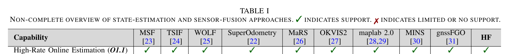
원문 Table I · PDF p.3 — TABLE I NON-COMPLETE OVERVIEW OF STATE-ESTIMATION AND SENSOR-FUSION APPROACHES. ✓INDICATES SUPPORT. ✗INDICATES LIMITED OR NO SUPPORT.
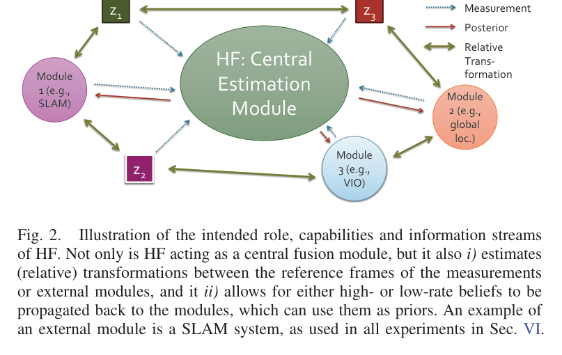
원문 Figure 2 · PDF p.4 — Fig. 2. Illustration of the intended role, capabilities and information streams of HF. Not only is HF acting as a central fusion module, but it also i) estimates (relative) transformations between the reference frames of the measurements or external modules, and it ii) allows for either high- or low-rate beliefs to be propagated back to the modules, which can use them as priors. An example of an external module is a SLAM system, as used in all experiments in Sec. VI.
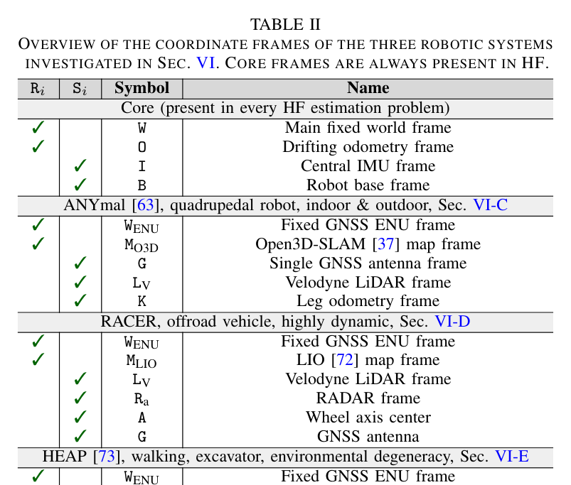
원문 Table II · PDF p.5 — TABLE II OVERVIEW OF THE COORDINATE FRAMES OF THE THREE ROBOTIC SYSTEMS INVESTIGATED IN SEC. VI. CORE FRAMES ARE ALWAYS PRESENT IN HF.
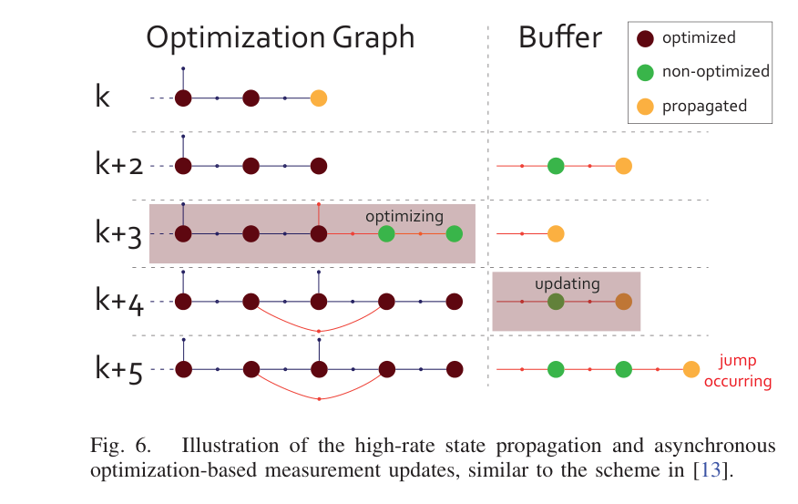
원문 Figure 6 · PDF p.11 — Fig. 6. Illustration of the high-rate state propagation and asynchronous optimization-based measurement updates, similar to the scheme in [13].
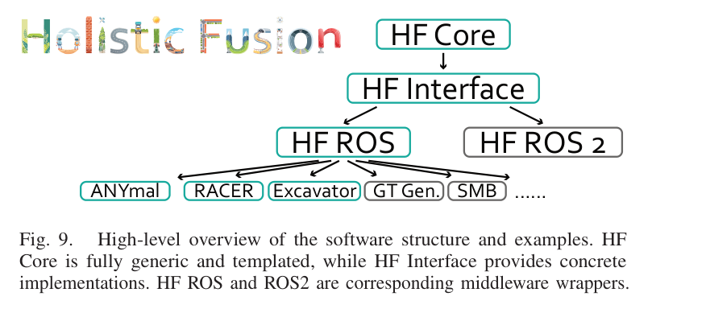
원문 Figure 9 · PDF p.12 — Fig. 9. High-level overview of the software structure and examples. HF Core is fully generic and templated, while HF Interface provides concrete implementations. HF ROS and ROS2 are corresponding middleware wrappers.
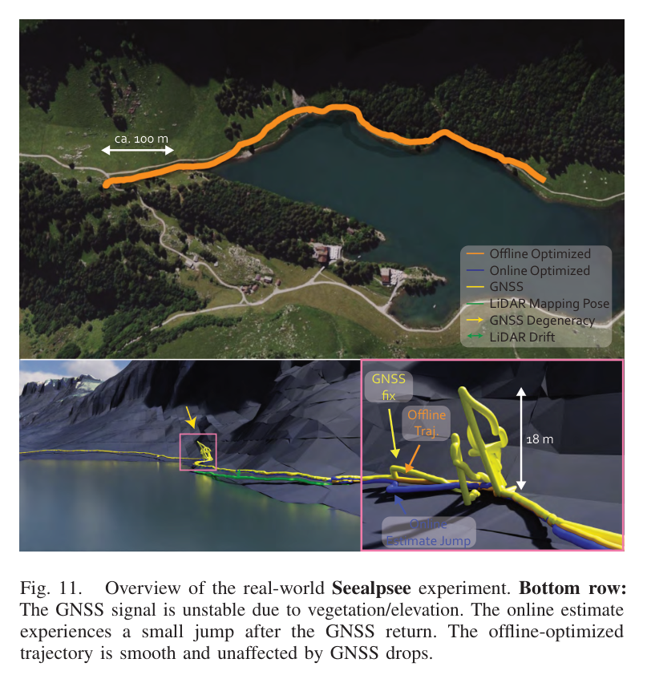
원문 Figure 11 · PDF p.13 — Fig. 11. Overview of the real-world Seealpsee experiment. Bottom row: The GNSS signal is unstable due to vegetation/elevation. The online estimate experiences a small jump after the GNSS return. The offline-optimized trajectory is smooth and unaffected by GNSS drops.
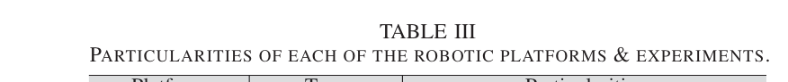
원문 Table III · PDF p.13 — TABLE III PARTICULARITIES OF EACH OF THE ROBOTIC PLATFORMS & EXPERIMENTS.
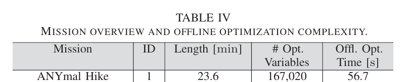
원문 Table IV · PDF p.13 — TABLE IV MISSION OVERVIEW AND OFFLINE OPTIMIZATION COMPLEXITY.
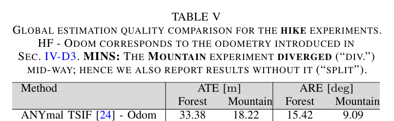
원문 Table V · PDF p.14 — TABLE V GLOBAL ESTIMATION QUALITY COMPARISON FOR THE HIKE EXPERIMENTS. HF - ODOM CORRESPONDS TO THE ODOMETRY INTRODUCED IN SEC. IV-D3. MINS: THE MOUNTAIN EXPERIMENT DIVERGED (“DIV.”) MID-WAY; HENCE WE ALSO REPORT RESULTS WITHOUT IT (“SPLIT”).
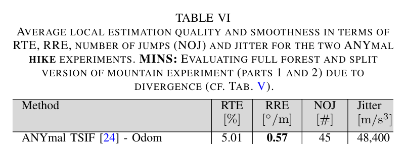
원문 Table VI · PDF p.14 — TABLE VI AVERAGE LOCAL ESTIMATION QUALITY AND SMOOTHNESS IN TERMS OF RTE, RRE, NUMBER OF JUMPS (NOJ) AND JITTER FOR THE TWO ANYMAL HIKE EXPERIMENTS. MINS: EVALUATING FULL FOREST AND SPLIT VERSION OF MOUNTAIN EXPERIMENT (PARTS 1 AND 2) DUE TO DIVERGENCE (CF. TAB. V).
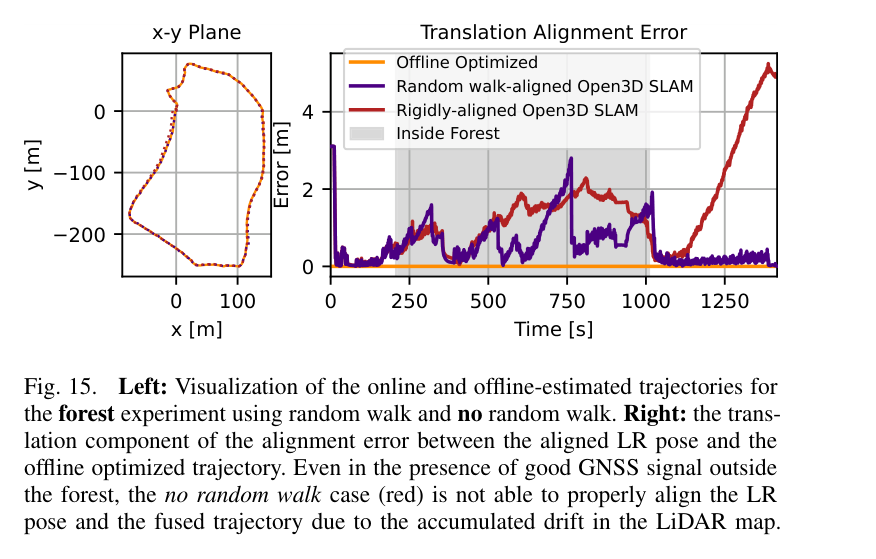
원문 Figure 15 · PDF p.15 — Fig. 15. Left: Visualization of the online and offline-estimated trajectories for the forest experiment using random walk and no random walk. Right: the trans- lation component of the alignment error between the aligned LR pose and the offline optimized trajectory. Even in the presence of good GNSS signal outside the forest, the no random walk case (red) is not able to properly align the LR pose and the fused trajectory due to the accumulated drift in the LiDAR map.
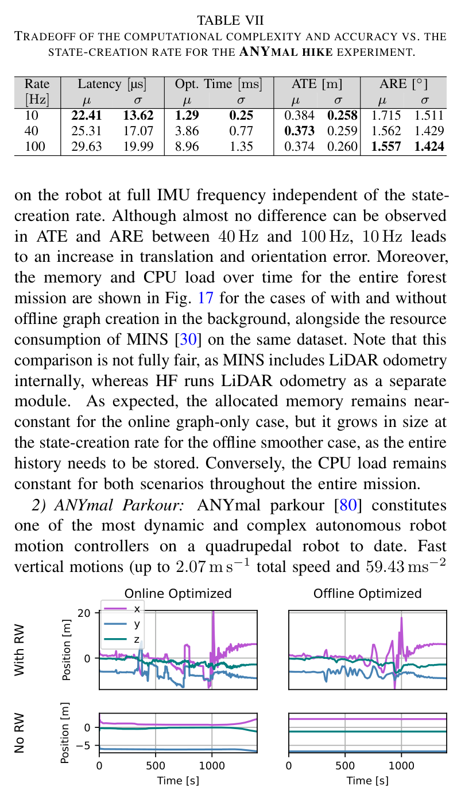
원문 Table VII · PDF p.15 — TABLE VII TRADEOFF OF THE COMPUTATIONAL COMPLEXITY AND ACCURACY VS. THE STATE-CREATION RATE FOR THE ANYMAL HIKE EXPERIMENT.
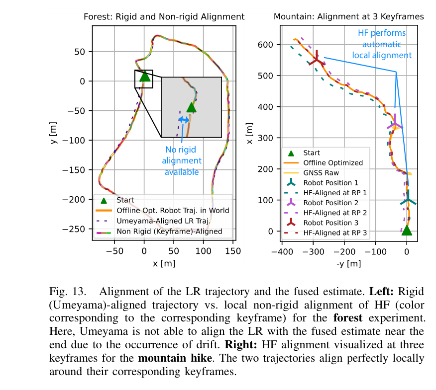
원문 Figure 13 · PDF p.15 — Fig. 13. Alignment of the LR trajectory and the fused estimate. Left: Rigid (Umeyama)-aligned trajectory vs. local non-rigid alignment of HF (color corresponding to the corresponding keyframe) for the forest experiment. Here, Umeyama is not able to align the LR with the fused estimate near the end due to the occurrence of drift. Right: HF alignment visualized at three keyframes for the mountain hike. The two trajectories align perfectly locally around their corresponding keyframes.
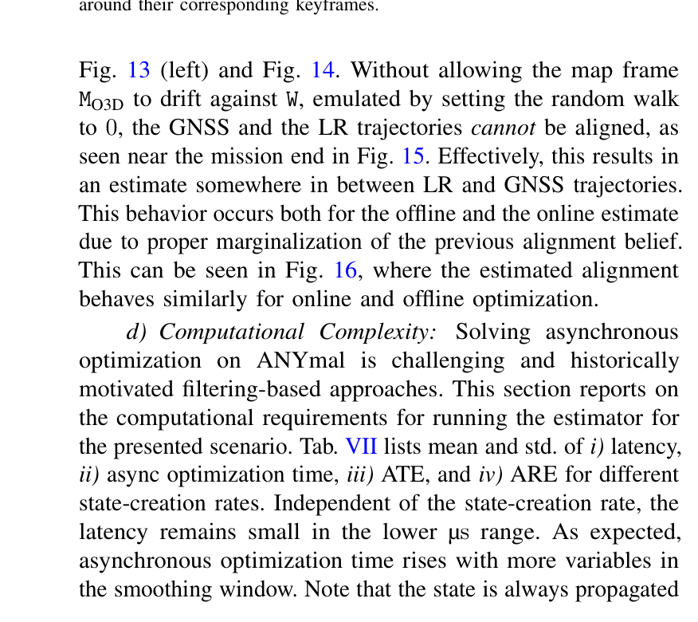
원문 Figure 13 · PDF p.15 — Fig. 13 (left) and Fig. 14. Without allowing the map frame MO3D to drift against W, emulated by setting the random walk to 0, the GNSS and the LR trajectories cannot be aligned, as seen near the mission end in Fig. 15. Effectively, this results in an estimate somewhere in between LR and GNSS trajectories. This behavior occurs both for the offline and the online estimate due to proper marginalization of the previous alignment belief. This can be seen in Fig. 16, where the estimated alignment behaves similarly for online and offline optimization. d) Computational Complexity: Solving asynchronous optimization on ANYmal is challenging and historically motivated filtering-based approaches. This section reports on the computational requirements for running the estimator for the presented scenario. Tab. VII lists mean and std. of i) latency, ii) async optimization time, iii) ATE, and iv) ARE for different state-creation rates. Independent of the state-creation rate, the latency remains small in the lower µs range. As expected, asynchronous optimization time rises with more variables in the smoothing window. Note that the state is always propagated
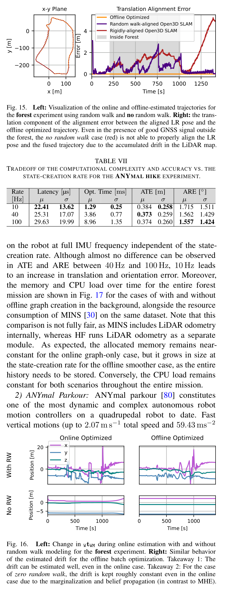
원문 Figure 16 · PDF p.15 — Fig. 16. Left: Change in WtWM during online estimation with and without random walk modeling for the forest experiment. Right: Similar behavior of the estimated drift for the offline batch optimization. Takeaway 1: The drift can be estimated well, even in the online case. Takeaway 2: For the case of zero random walk, the drift is kept roughly constant even in the online case due to the marginalization and belief propagation (in contrast to MHE).
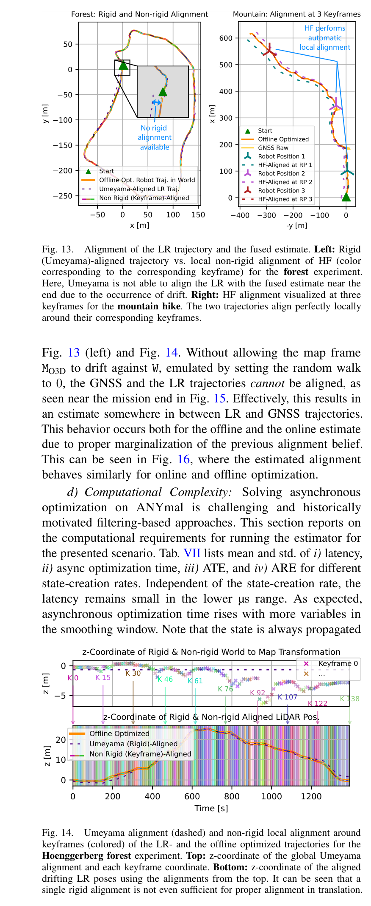
원문 Figure 14 · PDF p.15 — Fig. 14. Umeyama alignment (dashed) and non-rigid local alignment around keyframes (colored) of the LR- and the offline optimized trajectories for the Hoenggerberg forest experiment. Top: z-coordinate of the global Umeyama alignment and each keyframe coordinate. Bottom: z-coordinate of the aligned drifting LR poses using the alignments from the top. It can be seen that a single rigid alignment is not even sufficient for proper alignment in translation.
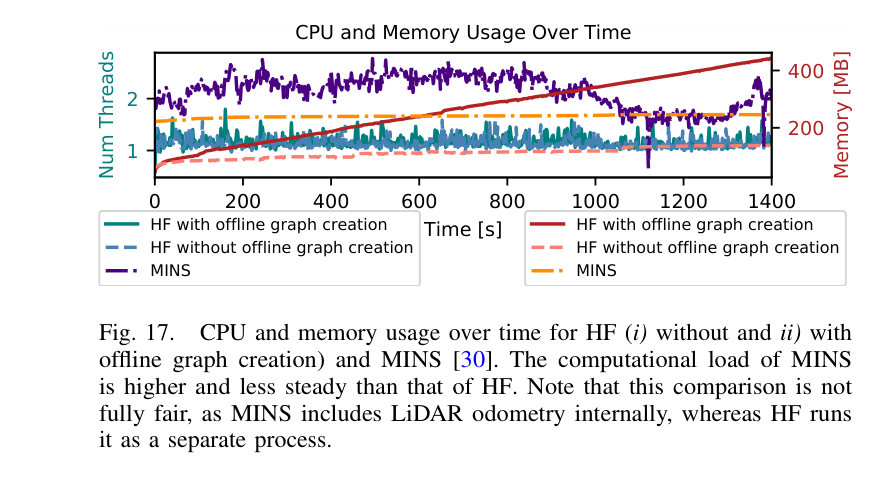
원문 Figure 17 · PDF p.16 — Fig. 17. CPU and memory usage over time for HF (i) without and ii) with offline graph creation) and MINS [30]. The computational load of MINS is higher and less steady than that of HF. Note that this comparison is not fully fair, as MINS includes LiDAR odometry internally, whereas HF runs it as a separate process.
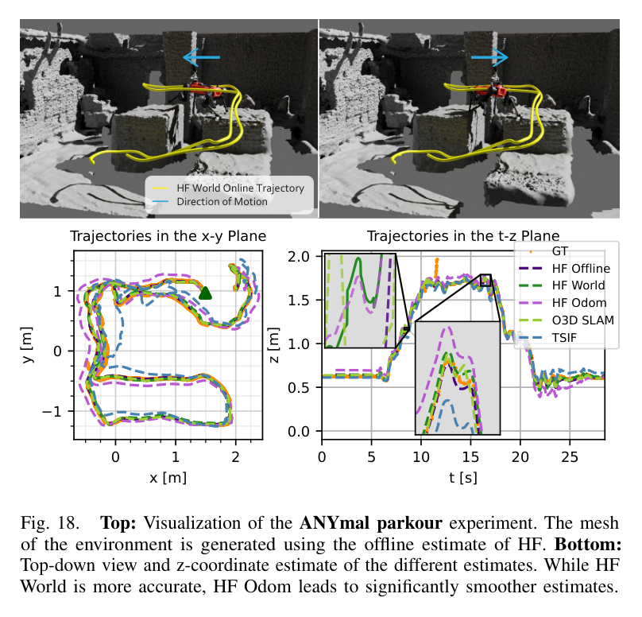
원문 Figure 18 · PDF p.16 — Fig. 18. Top: Visualization of the ANYmal parkour experiment. The mesh of the environment is generated using the offline estimate of HF. Bottom: Top-down view and z-coordinate estimate of the different estimates. While HF World is more accurate, HF Odom leads to significantly smoother estimates.
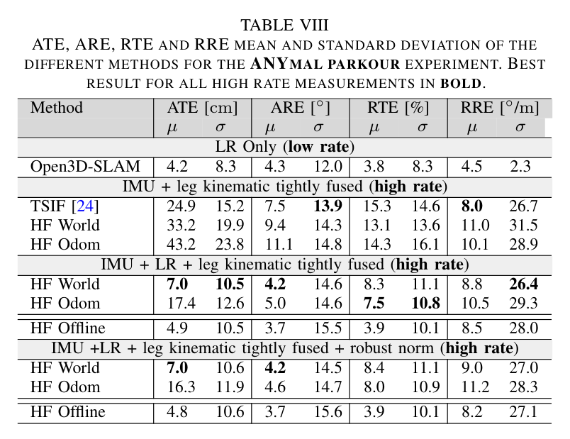
원문 Table VIII · PDF p.16 — TABLE VIII ATE, ARE, RTE AND RRE MEAN AND STANDARD DEVIATION OF THE DIFFERENT METHODS FOR THE ANYMAL PARKOUR EXPERIMENT. BEST RESULT FOR ALL HIGH RATE MEASUREMENTS IN BOLD. Method ATE [cm] ARE [◦] RTE [%] RRE [◦/m] µ σ µ σ µ σ µ σ LR Only (low rate) Open3D-SLAM 4.2 8.3 4.3 12.0 3.8 8.3 4.5 2.3 IMU + leg kinematic tightly fused (high rate) TSIF [24] 24.9 15.2 7.5 13.9 15.3 14.6 8.0 26.7 HF World 33.2 19.9 9.4 14.3 13.1 13.6 11.0 31.5 HF Odom 43.2 23.8 11.1 14.8 14.3 16.1 10.1 28.9 IMU + LR + leg kinematic tightly fused (high rate) HF World 7.0 10.5 4.2 14.6 8.3 11.1 8.8 26.4 HF Odom 17.4 12.6 5.0 14.6 7.5 10.8 10.5 29.3 HF Offline 4.9 10.5 3.7 15.5 3.9 10.1 8.5 28.0 IMU +LR + leg kinematic tightly fused + robust norm (high rate) HF World 7.0 10.6 4.2 14.5 8.4 11.1 9.0 27.0 HF Odom 16.3 11.9 4.6 14.7 8.0 10.9 11.2 28.3 HF Offline 4.8 10.6 3.7 15.6 3.9 10.1 8.2 27.1
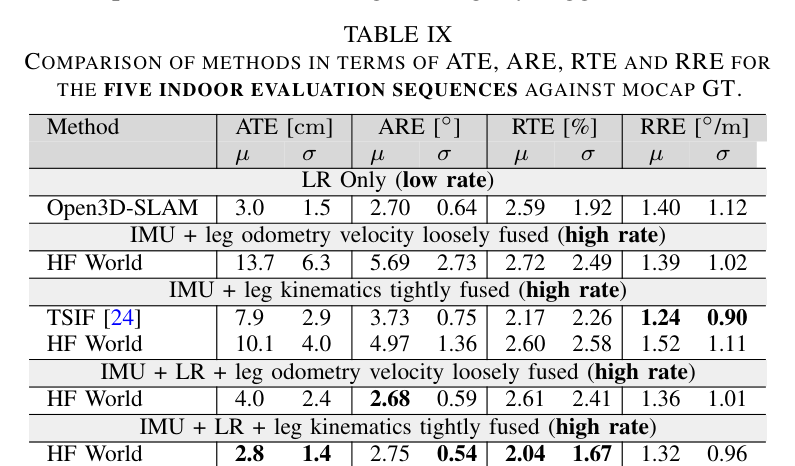
원문 Table IX · PDF p.16 — TABLE IX COMPARISON OF METHODS IN TERMS OF ATE, ARE, RTE AND RRE FOR THE FIVE INDOOR EVALUATION SEQUENCES AGAINST MOCAP GT.
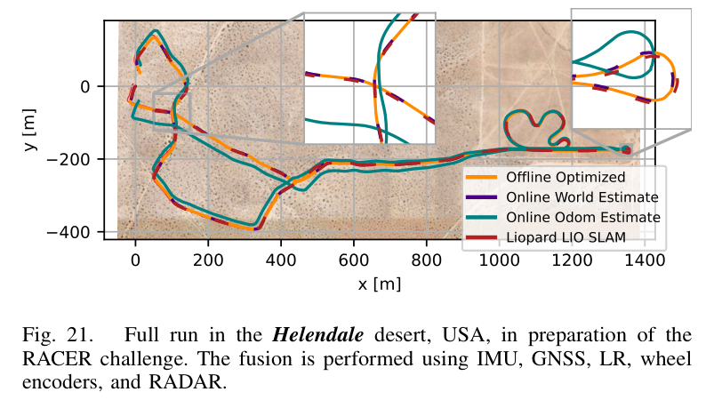
원문 Figure 21 · PDF p.17 — Fig. 21. Full run in the Helendale desert, USA, in preparation of the RACER challenge. The fusion is performed using IMU, GNSS, LR, wheel encoders, and RADAR.
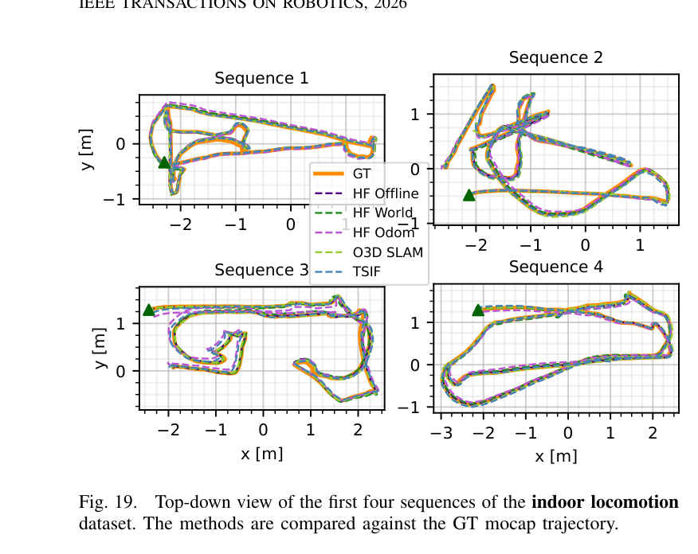
원문 Figure 19 · PDF p.17 — Fig. 19. Top-down view of the first four sequences of the indoor locomotion dataset. The methods are compared against the GT mocap trajectory.
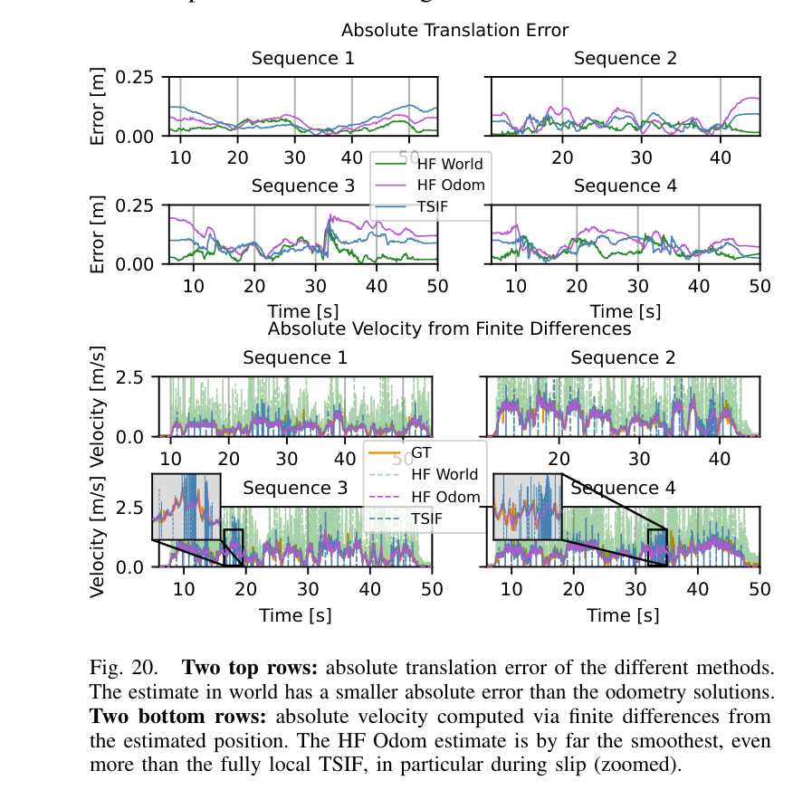
원문 Figure 20 · PDF p.17 — Fig. 20. Two top rows: absolute translation error of the different methods. The estimate in world has a smaller absolute error than the odometry solutions. Two bottom rows: absolute velocity computed via finite differences from the estimated position. The HF Odom estimate is by far the smoothest, even more than the fully local TSIF, in particular during slip (zoomed).
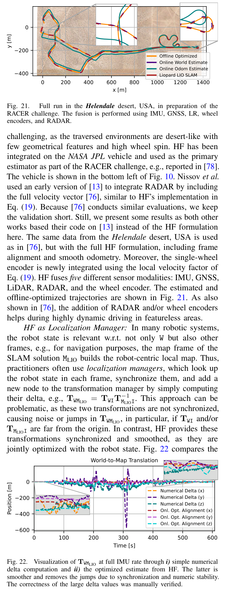
원문 Figure 22 · PDF p.17 — Fig. 22. Visualization of TWMLIO at full IMU rate through i) simple numerical delta computation and ii) the optimized estimate from HF. The latter is smoother and removes the jumps due to synchronization and numeric stability. The correctness of the large delta values was manually verified.